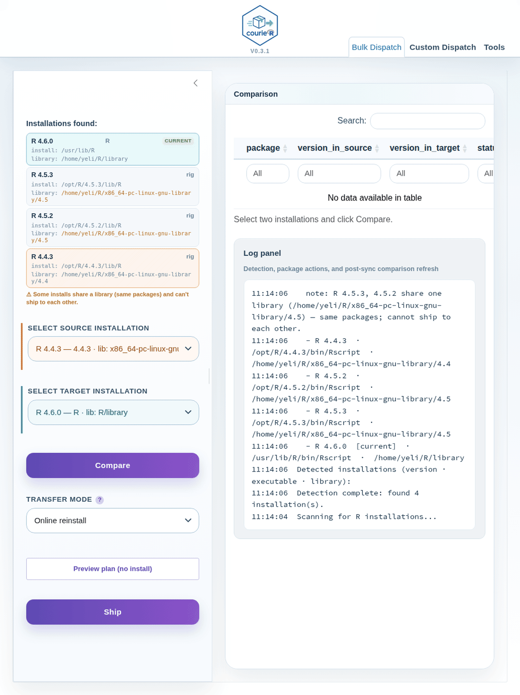

Migrate R packages between R versions — no reinstalling.
courieR detects every R installation on your machine and syncs packages between them — from the console or a point-and-click dashboard.
Install
install.packages("courieR")
library(courieR)
hub() # open the dashboard
migrate("4.5", "4.6") # one-liner CLI migrationDashboard
Select a source and target R installation, click Compare to see what’s missing or outdated, then click Ship. Progress streams live in the log pane — no frozen screens.

Bulk Dispatch: select source/target, compare, ship
How it works
| 🔍 Auto-detect | Finds R installs from the registry, Homebrew, rig, conda — no paths to configure |
| 📦 pak-powered | Resolves CRAN, GitHub, and Bioconductor packages from source metadata |
| 🖥 Dashboard + CLI |
hub() for point-and-click, ship() for scripting — same engine |
Works on Windows · macOS · Linux. No packages required on the source R installation.
Learn more
- Get Started — full walkthrough with screenshots
- Reference — all functions